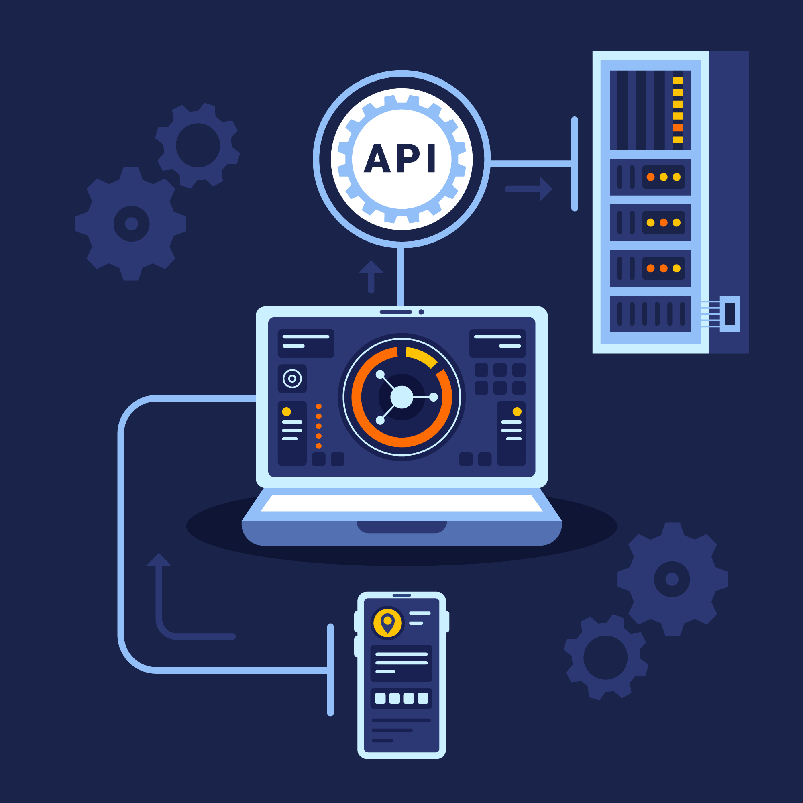

Obter dados de uma API
Kelvin de Lucca Feltrin
Tópicos Abordados
O que significa API
- Application Programming Interface (interface de programação de aplicações)
- São protocolos para a criação de aplicações de software
- Conectam serviços sem a necessidade de saber como esses elementos foram implementados

O que significa API
- Vídeo sugerido:
História das APIs
- As APIs surgiram antes do computador pessoal
- Eram normalmente usadas como bibliotecas para sistemas operacionais
- Embora a API enviasse mensagens entre mainframes em alguns momentos, ela era quase sempre local para os sistemas em que operava
- No início dos anos 2000, elas estavam se tornando uma tecnologia importante para a integração remota de dados
Como as APIs funcionam
- Funcionam como se fossem contratos
- Possuem documentações que representam um acordo entre as partes interessadas
- Uma das partes envia uma solicitação remota estruturada de uma forma específica, isso determinará como a aplicação da outra parte responderá
Como as APIs funcionam

- A arquitetura da API geralmente é explicada em termos de cliente e servidor
- A aplicação que envia a solicitação é chamada de cliente e a aplicação que envia a resposta é chamada de servidor
Como as APIs funcionam
- Existem quatro maneiras diferentes pelas quais as APIs podem funcionar, dependendo de quando e por que elas foram criadas:
- APIs SOAP
- APIs RPC
- APIs WebSocket
- APIs REST
Quais são os diferentes tipos de API
APIs privadas
São internas de uma empresa e são usadas apenas para conectar sistemas e dados dentro da empresa
APIs públicas
São abertas ao público e podem ser usadas por qualquer pessoa. Pode ou não haver alguma autorização e custo associado a esses tipos de APIs
APIs de parceiros
Estas são acessíveis apenas por desenvolvedores externos autorizados para auxiliar as parcerias entre empresas.
APIs compostas
Estas combinam duas ou mais APIs distintas para atender a requisitos ou comportamentos complexos do sistema
O que é um endpoint de API e por que ele é importante
- São os pontos de contato finais no sistema de comunicação da API
- Incluem URLs de servidores, serviços e outros locais digitais específicos de onde as informações são enviadas e recebidas entre sistemas
Exemplo de endpoint da api do Twitter:
https://api.twitter.com/2/tweets/{id}Como proteger uma API
- Tokens de autenticação: autoriza os usuários a fazer a chamada de API
- Chaves de API: verificam o programa ou a aplicação que faz a chamada de API
Onde posso encontrar novas APIs?
- RapidAPI: o maior mercado global de APIs com mais de 10.000 públicas e 1 milhão de desenvolvedores ativos no local.
- Public APIs: a plataforma agrupa APIs remotas em 40 categorias de nicho, tornando mais fácil navegar e encontrar a API certa para atender às suas necessidades
- APIList: têm listas de mais de 500 APIs Web, juntamente com informações detalhadas sobre como usá-las
Exemplo prático - API do ChatGPT
- Você pode interagir com a API por meio de solicitações HTTP de qualquer linguagem de programação
- Link para a página do Chat Completions API
Exemplo prático - API do ChatGPT
- Exemplo de requisição para a API:
Exemplo prático - API do ChatGPT
- É necessário obter a API key, através do link
Exemplo prático - API do ChatGPT
- Fazendo a requisição pelo Postman:
Exemplo prático - API do ChatGPT
- Link para o projeto em C# da API do ChatGPT
Exemplo prático - API do ChatGPT
- Vídeo sugerido:
Referências
- API Reference - OpenAI API
- APIs for Beginners 2023 - How to use an API (Full Course / Tutorial)
- APIs: Tudo sobre o que é API, exemplos e importância!
- Bearer Authentication
- CHATGPT + DOTNET - Criando uma aplicação para consumir a API do Chat GPT - YouTubee
- O que é API? Guia de APIs para iniciantes
- O que é uma API? – Explicação sobre interfaces de programação de aplicações
- REST API Guide - DEV Community
- Understanding APIs… Everything you need to know about APIs | by Mohammed Rishard | Star Gazers | Medium